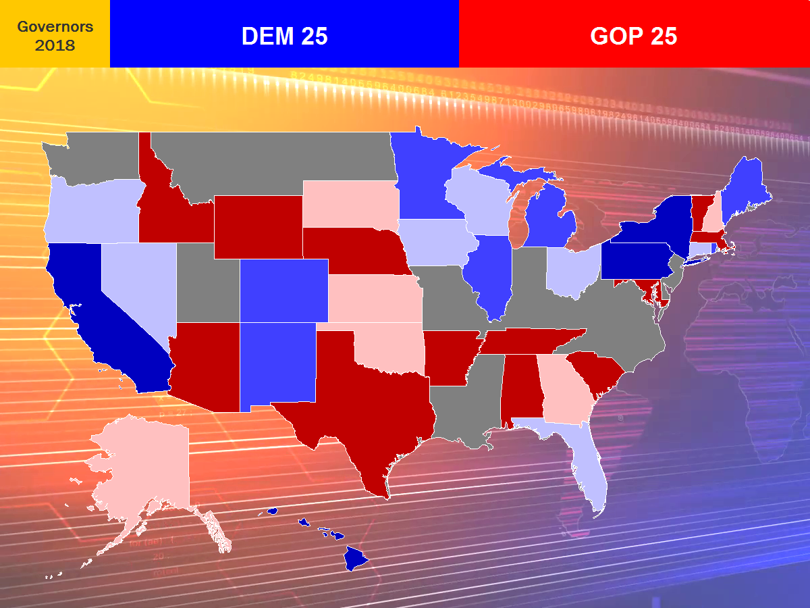

2018 Election Results Analysis
| Senate | Governors | Results |
Reported Results
Live Stream (November 6, 2018)
The latest estimates as of 11/07/2018, 06:20 EST: The estimate in the Montana Senate race is that incumbent Democrat Jon Tester is ahead by 2.2 points. The estimate in the Florida Senate race is that the incumbent Democrat Bill Nelson is behind Gov. Rick Scott by 0.1 points. Mississippi is headed to a runoff between Sen. Hyde-Smith (R) and Mike Espy. In the Georgia gubernatorial race, Georgia Secretary of State Brian Kemp (R) leads Stacey Abrams by 1.2 points -- it's possible that this race could still lead to a runoff.
Forecasts of the Indiana Senate race began at 18:00 EST. We are going live now, and I'll be doing commentary shortly! Also, enjoy the pre-election forecasts!
In the model, light represents 'likely', moderate represents 'high probability', and dark represents 'called'. All times EST.
Senate Key Races
| Race | Democrat | Republican | Likely | High Probability | Called |
| Arizona | Kyrsten Sinema | Martha McSally | -- | -- | -- |
| Florida | Bill Nelson | Rick Scott | -- | -- | -- |
| Indiana | Joe Donnelly | Mike Braun | Braun (19:30 EST) | Braun (20:47 EST) | -- |
| Michigan | Debbie Stabenow | John James | -- | -- | -- |
| Minnesota | Tina Smith | Karin Housley | -- | -- | -- |
| Mississippi | Mike Espy | Cindy Hyde-Smith | -- | -- | -- |
| Missouri | Claire McCaskill | Josh Hawley | -- | -- | -- |
| Montana | Jon Tester | Matt Rosendale | -- | -- | -- |
| Nevada | Jacky Rosen | Dean Heller | -- | -- | -- |
| New Jersey | Bob Menendez | Bob Hugin | -- | -- | -- |
| North Dakota | Heidi Heitkamp | Kevin Cramer | -- | -- | -- |
| Ohio | Sherrod Brown | Jim Renacci | -- | -- | -- |
| Tennessee | Phil Bredesen | Marsha Blackburn | -- | Blackburn (22:08 EST) | -- |
| Texas | Beto O'Rourke | Ted Cruz | -- | -- | -- |
| West Virginia | Joe Manchin | Patrick Morrisey | Manchin (20:54 EST) | -- | -- |
| Wisconsin | Tammy Baldwin | Leah Vukmir | -- | -- | -- |
Governors Key Races
| Race | Democrat | Republican | Likely | High Probability | Called |
| Alaska | Mark Begich | Mike Dunleavy | -- | -- | -- |
| Colorado | Jared Polis | Walker Stapleton | -- | -- | -- |
| Connecticut | Ned Lamont | Bob Stefanowski | -- | -- | -- |
| Florida | Andrew Gillum | Ron DeSantis | -- | -- | -- |
| Georgia | Stacey Abrams | Brian Kemp | -- | -- | -- |
| Illinois | J. B. Pritzker | Bruce Rauner | -- | -- | -- |
| Iowa | Fred Hubbell | Kim Reynolds | -- | -- | -- |
| Kansas | Laura KellyGreg Orman (I) | Kris Kobach | -- | -- | -- |
| Maine | Janet Mills | Shawn Moody | -- | -- | -- |
| Michigan | Gretchen Whitmer | Bill Schuette | -- | -- | -- |
| Minnesota | Tim Walz | Jeff Johnson | -- | -- | -- |
| Nevada | Steve Sisolak | Adam Laxalt | -- | -- | -- |
| New Hampshire | Molly Kelly | Chris Sununu | -- | -- | -- |
| New Mexico | Michelle Lujan Grisham | Steve Pearce | -- | -- | -- |
| Ohio | Richard Cordray | Mike DeWine | -- | -- | -- |
| Oklahoma | Drew Edmondson | Kevin Stitt | -- | -- | -- |
| Oregon | Kate Brown | Knute Buehler | -- | -- | -- |
| Rhode Island | Gina Raimondo | Allan Fung | -- | -- | -- |
| South Dakota | Billie Sutton | Kristi Noem | -- | -- | -- |
| Vermont | Christine Hallquist | Phil Scott | -- | -- | -- |
| Wisconsin | Tony Evers | Scott Walker | -- | -- | -- |
In terms of methodology, this model essentially guesses the final results of the election based on the geographic distribution of results that are reporting so far and the historical partisan lean of that region. This model is currently being run for statewide elections in 19 states: CO, FL, GA, IA, IN, KS, MI, MN, MO, MT, NC, ND, OH, PA, TN, TX, VA, WI, WV. This model is not suitable to be run on AZ, IL, NV, because these states have a high concentration of votes all in one area of the state, nor is this method effective in small states, such as AK, CT, DE, NH, RI, VT. Otherwise, this model is not set up in other states.
We will use the following terminology for the election analysis: Likely means that based on exit polls, pre-election polling data, and initial reports, it is very likely that a candidate will win the race. High probability means that based on our model, it is almost certain that a candidate will win the election, or that a candidate will win unless there's an extremely unlikely shift in the results being reported and that absentee and preliminary ballots shift the election outcome. Projected means that a major news organization, such as the AP, has called the election for a candidate.
Senate Pre-Election Forecast

| Race | Democrat | Republican | 2018-OLS Expected | 2018-OLS Probability | 2018-LAD Expected | 2018-LAD Probability | 2012 Spread | 2018-M Spread | Prediction |
| Arizona | Kyrsten Sinema | Martha McSally | Sinema +1.0 | 61.0% D | Sinema +0.9 | 61.4% D | Sinema +0.7 | Sinema +1 | Leans D |
| California | Dianne Feinstein Kevin de Leon | -- | -- | 100% D | -- | 100% D | -- | -- | Safe D |
| Connecticut | Chris Murphy | Matthew Corey | -- | -- | -- | -- | Murphy +18.9 | Murphy +16 | Safe D |
| Delaware | Tom Carper | Rob Arlett | -- | -- | -- | -- | -- | -- | Safe D |
| Florida | Bill Nelson | Rick Scott | Nelson +2.9 | 74.7% D | Nelson +3.5 | 88.0% D | Nelson +3.0 | Nelson +3 | Leans D |
| Hawaii | Mazie Hirono | Ron Curtis | -- | -- | -- | -- | -- | -- | Safe D |
| Indiana | Joe Donnelly | Mike Braun | Donnelly +1.5 | 55.7% D | Donnelly +0.9 | 53.6% D | Donnelly +2.1 | Donnelly +3 | Leans D |
| Maine | Angus King* Zak Ringelstein |
Eric Brakey | -- | -- | -- | -- | -- | -- | Safe I |
| Maryland | Ben Cardin | Tony Campbell | -- | -- | -- | -- | -- | -- | Safe D |
| Massachusetts | Elizabeth Warren | Geoff Diehl | -- | -- | -- | -- | Warren +25.1 | Warren +24 | Safe D |
| Michigan | Debbie Stabenow | John James | Stabenow +7.3 | 94.9% D | Stabenow +8.7 | 98.9% D | Stabenow +11.1 | Stabenow +9 | Likely D |
| Minnesota | Amy Klobuchar | Jim Newberger | -- | -- | -- | -- | Klobuchar +24.0 | Klobuchar +26 | Safe D |
| Minnesota | Tina Smith | Karin Housley | -- | -- | -- | -- | Smith +8.7 | Smith +8 | Likely D |
| Mississippi | David Baria | Roger Wicker | -- | -- | -- | -- | -- | -- | Safe R |
| Mississippi | Mike Espy | Cindy Hyde-Smith | -- | -- | -- | -- | -- | -- | Safe R |
| Missouri | Claire McCaskill | Josh Hawley | Hawley +0.9 | 58.5% R | Hawley +1.2 | 61.4% R | Hawley +0.6 | Tie | Leans R |
| Montana | Jon Tester | Matt Rosendale | Tester +4.3 | 79.2% D | Tester +5.3 | 89.1% D | Tester +3.8 | Tester +4 | Leans D |
| Nebraska | Jane Raybould | Deb Fischer | -- | -- | -- | -- | -- | -- | Safe R |
| Nevada | Jacky Rosen | Dean Heller | Rosen +3.1 | 79.4% D | Rosen +5.6 | 96.4% D | Rosen +2.7 | Rosen +2 | Leans D |
| New Jersey | Bob Menendez | Bob Hugin | Menendez +11.8 | 98.3% D | Menendez +15.6 | 99.8% D | Menendez +9.1 | Menendez +7 | Likely D |
| New Mexico | Martin Heinrich | Mick Rich | -- | -- | -- | -- | -- | -- | Safe D |
| New York | Kirsten Gillibrand | Chele Farley | -- | -- | -- | -- | -- | -- | Safe D |
| North Dakota | Heidi Heitkamp | Kevin Cramer | Cramer +10.7 | 99.5% R | Cramer +12.3 | >99.9% R | Cramer +11.1 | Cramer +10 | Likely R |
| Ohio | Sherrod Brown | Jim Renacci | -- | -- | -- | -- | Brown +9.6 | Brown +11 | Likely D |
| Pennsylvania | Bob Casey | Lou Barletta | -- | -- | -- | -- | Casey +15.2 | Casey +15 | Safe D |
| Rhode Island | Sheldon Whitehouse | Robert Flanders | -- | -- | -- | -- | -- | -- | Safe D |
| Tennessee | Phil Bredesen | Marsha Blackburn | Blackburn +4.9 | 81.0% R | Blackburn +6.0 | 91.7% R | Blackburn +5.4 | Blackburn +7 | Likely R |
| Texas | Beto O'Rourke | Ted Cruz | Cruz +6.9 | 98.6% R | Cruz +6.1 | 99.9% R | Cruz +6.7 | Cruz +7 | Likely R |
| Utah | Jenny Wilson | Mitt Romney | -- | -- | -- | -- | -- | -- | Safe R |
| Vermont | Bernie Sanders* | Brooke Paige | -- | -- | -- | -- | -- | -- | Safe I |
| Virginia | Tim Kaine | Corey Stewart | -- | -- | -- | -- | Kaine +16.5 | Kaine +16 | Safe D |
| Washington | Maria Cantwell | Susan Hutchison | -- | -- | -- | -- | -- | -- | Safe D |
| West Virginia | Joe Manchin | Patrick Morrisey | -- | -- | -- | -- | Manchin +8.4 | Manchin +7 | Likely D |
| Wisconsin | Tammy Baldwin | Leah Vukmir | -- | -- | -- | -- | Baldwin +10.6 | Baldwin +11 | Likely D |
| Wyoming | Leah Vukmir | John Barrasso | -- | -- | -- | -- | -- | -- | Safe R |
Governors Pre-Election Forecast

| Race | Democrat | Republican | 2018-OLS Expected | 2018-OLS Probability | 2018-LAD Expected | 2018-LAD Probability | 2012 Spread | 2018-M Spread | Prediction |
| Alabama | Walt Maddox | Kay Ivey | -- | -- | -- | -- | -- | -- | Safe R |
| Alaska | Mark Begich |
Mike Dunleavy | -- | -- | -- | -- | Dunleavy +3.9 | Dunleavy +7 | Leans R |
| Arizona | David Garcia | Doug Ducey | Ducey +14.1 | >99.9% R | Ducey +14.8 | >99.9% R | Ducey +14.2 | Ducey +14 | Safe R |
| Arkansas | Jared Henderson | Asa Hutchinson | -- | -- | -- | -- | -- | -- | Safe R |
| California | Gavin Newsom | John Cox | -- | -- | -- | -- | Newsom +16.0 | Newsom +14 | Safe D |
| Colorado | Jared Polis | Walker Stapleton | -- | -- | -- | -- | Polis +6.6 | Polis +7 | Likely D |
| Connecticut | Ned Lamont | Bob Stefanowski | Lamont +3.8 | 62.3% D | Lamont +6.7 | 74.7% D | Lamont +4.6 | Lamont +7 | Leans D |
| Florida | Andrew Gillum | Ron DeSantis | Gillum +3.2 | 76.2% D | Gillum +4.3 | 88.3% D | Gillum +3.4 | Gillum +3 | Leans D |
| Georgia | Stacey Abrams | Brian Kemp | Kemp +0.1 | 51.6% R | Kemp +0.9 | 64.6% R | Kemp +0.7 | Kemp +1 | Leans R |
| Hawaii | David Ige | Andria Tupola | -- | -- | -- | -- | -- | -- | Safe D |
| Idaho | Paulette Jordan | Brad Little | -- | -- | -- | -- | -- | -- | Safe R |
| Illinois | J. B. Pritzker | Bruce Rauner | -- | -- | -- | -- | -- | -- | Likely D |
| Iowa | Fred Hubbell | Kim Reynolds | -- | -- | -- | -- | Hubbell +0.4 | Hubbell +1 | Leans D |
| Kansas | Laura KellyGreg Orman (I) | Kris Kobach | -- | -- | -- | -- | Kobach +1.0 | Kobach +1 | Leans R |
| Maine | Janet Mills | Shawn Moody | -- | -- | -- | -- | -- | -- | Likely D |
| Maryland | Ben Jealous | Larry Hogan | -- | -- | -- | -- | Hogan +18.5 | Hogan +17 | Safe R |
| Massachusetts | Jay Gonzalez | Charlie Baker | -- | -- | -- | -- | Baker +39.4 | Baker +41 | Safe R |
| Michigan | Gretchen Whitmer | Bill Schuette | Whitmer +8.1 | 94.1% D | Whitmer +8.4 | 95.3% D | Whitmer +9.5 | Whitmer +9 | Likely D |
| Minnesota | Tim Walz | Jeff Johnson | -- | -- | -- | -- | Walz +8.9 | Walz +9 | Likely D |
| Nebraska | Bob Krist | Pete Ricketts | -- | -- | -- | -- | -- | -- | Safe R |
| Nevada | Steve Sisolak | Adam Laxalt | Sisolak +1.5 | 65.0% D | Sisolak +2.3 | 72.2% D | Sisolak +2.2 | Sisolak +2 | Leans D |
| New Hampshire | Molly Kelly | Chris Sununu | -- | -- | -- | -- | Sununu +6.9 | Sununu +8 | Likely R |
| New Mexico | Michelle Lujan Grisham | Steve Pearce | -- | -- | -- | -- | Grisham +7.0 | Grisham +7 | Likely D |
| New York | Andrew Cuomo | Marcus Molinaro | -- | -- | -- | -- | -- | -- | Safe D |
| Ohio | Richard Cordray | Mike DeWine | -- | -- | -- | -- | Cordray +4.1 | Cordray +2 | Leans D |
| Oklahoma | Drew Edmondson | Kevin Stitt | -- | -- | -- | -- | Stitt +5.1 | Stitt +3 | Leans R |
| Oregon | Kate Brown | Knute Buehler | -- | -- | -- | -- | Brown +4.0 | Brown +5 | Leans D |
| Pennsylvania | Tom Wolf | Scott Wagner | -- | -- | -- | -- | Wolf +22.6 | Wolf +21 | Safe D |
| Rhode Island | Gina Raimondo | Allan Fung | -- | -- | -- | -- | -- | -- | Likely D |
| South Carolina | James Smith | Henry McMaster | -- | -- | -- | -- | -- | -- | Safe R |
| South Dakota | Billie Sutton | Kristi Noem | -- | -- | -- | -- | Noem +1.5 | Noem +2 | Leans R |
| Tennessee | Karl Dean | Bill Lee | Lee +11.9 | 96.0% R | Lee +10.2 | 96.9% R | Lee +14.9 | Lee +16 | Safe R |
| Texas | Lupe Valdez | Greg Abbott | -- | -- | -- | -- | Abbott +17.4 | Abbott +18 | Safe R |
| Vermont | Christine Hallquist | Phil Scott | -- | -- | -- | -- | -- | -- | Safe R |
| Wisconsin | Tony Evers | Scott Walker | -- | -- | -- | -- | Evers +3.1 | Evers +4 | Leans D |
| Wyoming | Mary Throne | Mark Gordon | -- | -- | -- | -- | -- | -- | Safe R |